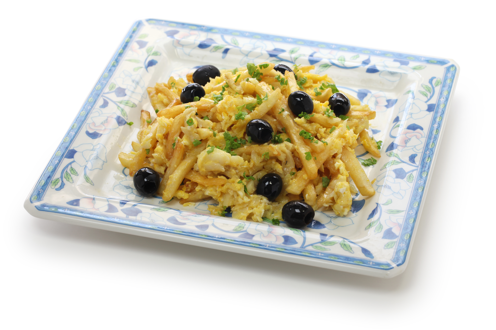

Bacalhau à Brás (Salt Cod in the Style of Brás)

Description
Bacalhau à Brás or Salt Cod in the Style of Brás is a Portuguese dish that originated in Bairro Alto, Lisbon, during the 19th century.
It's a simple dish consisting of salted cod, onions, thinly chopped potatoes and eggs. It may also be garnished with parsley and olives.
Ingredients
- 600 g of desalted codfish
- 200 g of straw potato
- 6 eggs
- 1 onion
- 4 garlic cloves
- 2 bay leaves
- Black olives
- Olive oil
- Parsley
- Salt and pepper
Steps
Prepare the codfish:
- Bring a pan of water with bay leaves and 2 garlic cloves to a boil.
- Add the codfish as soon as it boils.
- When it boils again, turn off the heat and set it aside for 15 minutes.
- Remove the cod from the water and let it cool.
- Once it cools, remove the skin and bones and shred the cod.
Prepare the Bacalhau à Brás:
- Heat a frying pan under low heat in olive oil and sautée the onion and 2 cloves of chopped garlic.
- Add the shredded cod and cook for a few minutes.
- Add the potatoes, mixing carefully.
- Beat the eggs lightly in a separate bowl.
- Add half of the beaten eggs to the codfish stew, mixing well.
- Season with salt and black pepper to taste and let the eggs cook, always stirring the mixture.
- Turn off the heat and mix in the rest of the eggs.
- Sprinkle the dish with parsley and black olives.
- Serve it hot.
Home